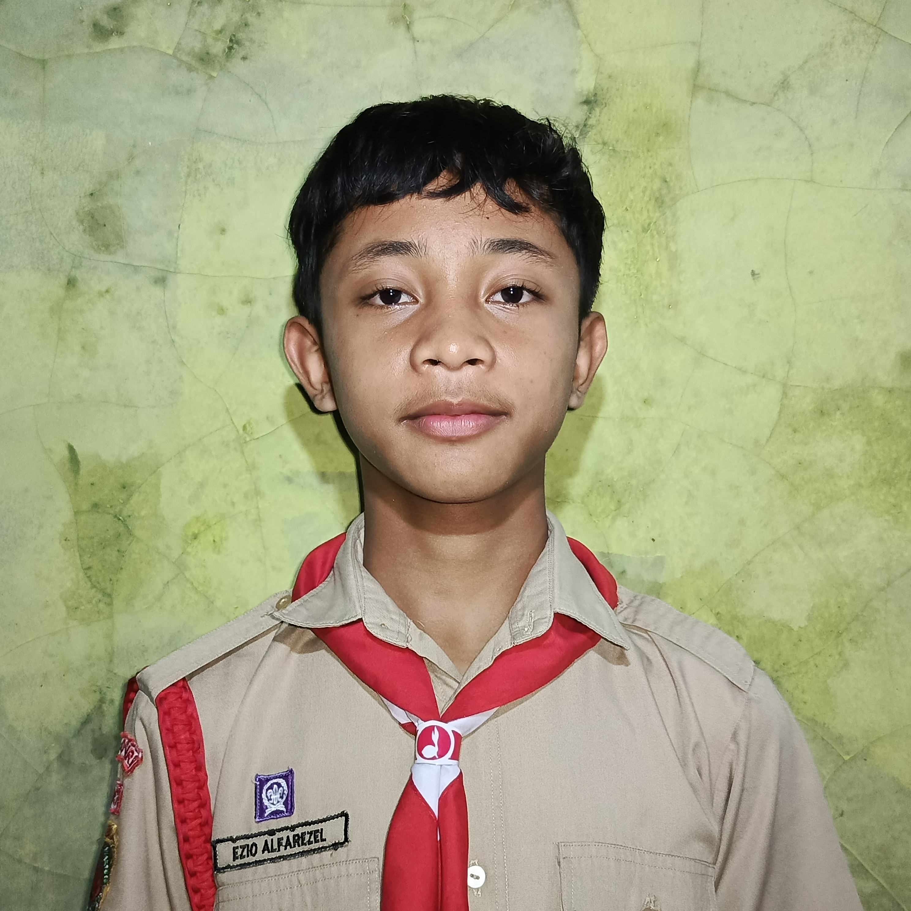

Ezio's BIODATA
Ezio
Alfarezel
Eksplorasi biodata dan koneksi sosial media Ezio Alfarezel melalui menu navigasi.

Ezio Alfarezel
MY BIODATA • BIODATA
Tempat Tanggal Lahir
GunungKidul, 06 Agustus 2011
Agama
Islam
Sekolah
SMP NEGERI 2 PRACIMANTORO
Hobi
Bermain Video Game
Nomor HP
0882-0037-70798
Idola
Freya JKT48
ziogo65@gmail.com
Alamat Lengkap
Tlogorejo, Watangrejo, RT 02/RW 01, Pracimantoro, Wonogiri, Jawa Tengah
Motto Hidup
"Hidup senang di masa depan dapat dicapai dengan mengambil pilihan-pilihan yang sulit di masa muda"